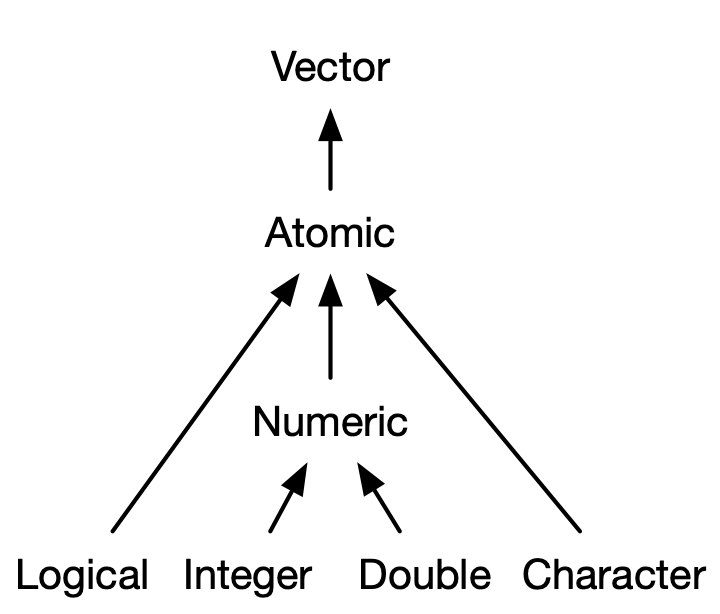

2 + 2[1] 45 - 3[1] 23 * 2[1] 66 / 3[1] 2The following definition is from the book Learning R de Richard Cotton:
“Just to confuse you, R refers to two things. There is R, the programming language, and R, the piece of software that you use to run programs written in R. Fortunately, most of the time it should be clear from the context which R is being referred to.”
“R (the language) was created in the early 1990s by Ross Ihaka and Robert Gentleman, then both working at the University of Auckland. It is based upon the S language that was developed at Bell Laboratories in the 1970s, primarily by John Chambers. R (the software) is a GNU project, reflecting its status as important free and open source software.”
Free and open source
Platform independent
Foster’s a reproducible workflow
Active community of users and programmers making R better
In this course we will use Rstudio.
Rstudio is an IDE (integrated development environment) that works as a graphical interface that facilitates the use of the R language.
You have a online version, Posit cloud
The following image and sentence is taken from the book Statistical Inference via Data Science: A ModernDive into R and the Tidyverse

“More precisely, R is a programming language that runs computations, while RStudio is an integrated development environment (IDE) that provides an interface by adding many convenient features and tools. So just as the way of having access to a speedometer, rearview mirrors, and a navigation system makes driving much easier, using RStudio’s interface makes using R much easier as well.”
There are alternatives to Rstudio, but Rstudio is the de facto R IDE for many.
An alternative that is gaining a lot of popularity is the well-known Visual Studio Code.
If you don’t want to use Rstudio, this would be the suggested alternative

Lower Right:
Upper Right:
Lower Left: Console
Upper Left: Text editor
Nice Features:
To keep all our files organised, including databases we load or graphics we create, we are going to work in what RStudio calls projects.
Essentially, a RStudio project is a folder or directory on your computer that contains all the elements of your project.

The use of projects in RStudio is a good practice that allows you to keep control of all the files used in a project.
Projects are often not only complex but also dynamic, and the management of all the elements that make up a project is often an essential part of the workflow.
Furthermore, the organisation into projects facilitates reproducibility.
For a more detailed discussion, read this section of this good book.
Next, we are going to introduce the basic handling of the working environment, such as defining variables, making comments to the code, etc. In this process, we will be introducing language concepts that we will be defining in a formal way later on.
To introduce us to the use of the editor and the command line of Rstudio, we will start with some very basic operations
2 + 2[1] 45 - 3[1] 23 * 2[1] 66 / 3[1] 2It is possible to apply standard association rules as well as operations beyond the basic ones (power, logarithm, etc.)
(5 + 3) / 4[1] 23^2[1] 9log(100, base = 10)[1] 25 %% 3[1] 2sqrt(9)[1] 3We can store values by assigning a name to them, so that we can access the value later.
x <- 4
x[1] 4y <- (5 + 3) / 4
y[1] 2You create variables, or create new objects with the <- operator. You can also do this in the more conventional way with = but this is not standard practice.
Employees <- 150
Employees[1] 150With names you have to respect certain conventions: they must start with a letter and can only contain letters, numbers, _ and ..
You are free to name variables as you like, but there are some rules of style, for example
i_use_snake_case
otherPeopleUseCamelCase
some.people.use.periods
Lo_queMeSale.de.por_AHI
New_analysts_January <- 5
New_analysts_February <- 3
Analysts <- New_analysts_January + New_analysts_February
Analysts[1] 8Comments are initiated with #
# Calculation of number of analysts
Analysts <- New_analysts_January + New_analysts_February
Analysts[1] 8Throughout the course we will talk about R runtime errors, but it is worth getting used to them, as they will always be with us 😢, but they give us a guide to solve them 😊
## analyst_number_calculation
Analysts_update <- New_analysts_January + New_analysts_February + New_analysts_March
Analyst_updateLibraries or packages are perhaps the most commonly used elements in R for practical work.
A formal definition of a library from the book R Packages by Hadley Wickham and Jennifer Bryan is as follows:
“In R, the fundamental unit of shareable code is the package. A package bundles together code, data, documentation, and tests, and is easy to share with others. As of March 2023, there were over 19,000 packages available on the Comprehensive R Archive Network, or CRAN, the public clearing house for R packages”.
An R package is a way to share code in an organised way that expands the possibilities of R by extending its functionality.
Libraries are installed using the install.packages() command, and libraries are loaded with library().
install.packages(emoji)
library(emoji)In order to work with data, it is necessary to understand how data is stored in the computer by each programming language.
The structures that store numerical information, and the way they are accessed, differ from Python to R, or from R to other languages.
The most important family of variable types in R are vectors, which can be classified as either atomic or list.
The structure of atomic vectors is as follows:

Number <- 1.0 # (real, floating)
Integer <- 1
Character <- "ab"
Logical <- TRUE
Number[1] 1Integer[1] 1Character[1] "ab"Logical[1] TRUEBe careful when working with different types
Number + CharacterWhen we perform an operation with two different numeric types (real + integer), R forces (coerces) the result to the type with the highest precision, in this case the real type.
Sum <- Number + Integer
Sum[1] 2typeof(Sum)[1] "double"Several things here, we’ve had our first approximation to a function in R, a topic we’ll explore in more detail later. Like the intuitive idea we have of a function from high school mathematics, a function in R has an argument (variable in parentheses) and gives us a result.
In R, functions have their name followed by parentheses, where we place the argument variable(s): a_function(x).
The typeof() function tells us the type of the variable (numeric, integer or logical).
typeof(Number)[1] "double"typeof(Integer)[1] "double"typeof(Character)[1] "character"typeof(Logical)[1] "logical"There are also specific functions to determine whether a variable is of a specific type
is.numeric(Number)[1] TRUEis.integer(Integer) [1] FALSEis.character(Character)[1] TRUEis.logical(Logical)[1] TRUEWe see that R tells us that Integer is not an integer, to specify an integer we have to put a letter L at the end of the number
Integer_2 <- 1L
Integer_2[1] 1is.integer(Integer_2)[1] TRUEtypeof(Integer_2)[1] "integer"We are going to use R to analyse data and create statistical or algorithmic models from it.
Most data is represented in tables: spreadsheets, relational databases tables, .csv files, etc.
Most statistical models use as input data in table form.
The most commonly used objects for working with tables in R are data frames and other variants (tibble or data.tables for example).
Before understanding how to work with tables, let’s review the concept of vector, which is the basic type on which data frames are built.
What characterises a vector is that it can store only data of the same type.
vector_numeric <- c(1, 10, 49)
vector_character <- c("a", "b", "c")
vector_numeric[1] 1 10 49vector_character[1] "a" "b" "c"Vectors are one-dimensional arrays (row or column) that can store numbers, characters or logical variables.
As we have seen above, vectors are created with the c() command where the c stands for combine.
DO NOT CONFUSE this structure with vectors as elements of a vector space (more on this later).
vector_mixed <- c(1,2, "a")
vector_mixed[1] "1" "2" "a"In the previous example we wanted to create a vector with elements of different types, numeric and character. R has converted all the elements to character.
If there are characters in a vector R converts all the elements to character, if they are all numeric but of different types, R converts them to the type with the highest precision (double). What happens with logical vectors?
vector_mixed2 <- c(1,2,TRUE)
vector_mixed2[1] 1 2 1typeof(vector_mixed2)[1] "double"In this case R has converted the elements of the vector to numeric.
We observe something that later will be very useful, R has assigned to the logical variable TRUE the number 1. The variable FALSE has been assigned a zero.
Can we change a variable or a vector type? YES
vector_numeric[1] 1 10 49as.character(vector_numeric)[1] "1" "10" "49"logic_vector <- c(TRUE, FALSE)
logic_vector[1] TRUE FALSEas.numeric(logic_vector)[1] 1 0There are several functions in R that allow for changes of type
as.character(logic_vector)[1] "TRUE" "FALSE"There are a couple of other ways to create vectors
vector_1 <- 1:5
vector_2 <- seq(1,5)
vector_1[1] 1 2 3 4 5vector_2[1] 1 2 3 4 5where seq stands for sequence
Since in this course the data we will use is external and not generated by us, we will not go into the different ways of generating vectors. The following box elaborates in more detail on this topic and is optional, you can follow the rest of the lecture without reading it.
More complex sequences can be created with the seq() function.
vector_3 <- seq(1,10, by = 2)
vector_4 <- seq(1,10, length.out = 20)
vector_5 <- seq(1,10, along.with = vector_1)
vector_3[1] 1 3 5 7 9vector_4 [1] 1.000000 1.473684 1.947368 2.421053 2.894737 3.368421 3.842105
[8] 4.315789 4.789474 5.263158 5.736842 6.210526 6.684211 7.157895
[15] 7.631579 8.105263 8.578947 9.052632 9.526316 10.000000vector_5[1] 1.00 3.25 5.50 7.75 10.00Another command to generate sequences is rep.
repeated <- rep(4,10)
repeated [1] 4 4 4 4 4 4 4 4 4 4We can repeat not only a value but vectors
repeat_2 <- rep(1:4, 4)
repeat_2 [1] 1 2 3 4 1 2 3 4 1 2 3 4 1 2 3 4repeat_3 <- rep(1:4, each = 4)
repeat_3 [1] 1 1 1 1 2 2 2 2 3 3 3 3 4 4 4 4repeat_4 <- rep(1:4, each=2, times=2)
repeat_4 [1] 1 1 2 2 3 3 4 4 1 1 2 2 3 3 4 4repeat_5 <- rep(1:4, c(2,3,4,5))
repeat_5 [1] 1 1 2 2 2 3 3 3 3 4 4 4 4 4We can also create random vectors, i.e., realisations of a random variable from a given distribution
random_normal <- rnorm(10)
random_uniform <- runif(10)
random_normal [1] 2.4691557 1.3300018 1.7557898 -0.1636695 -0.4116506 -0.5390189
[7] -1.2480965 0.0784576 0.2103423 2.3290317random_uniform [1] 0.6746163 0.9786283 0.1523523 0.9191518 0.4866597 0.5110803 0.0809542
[8] 0.9804986 0.3132928 0.5727041The elements of the vector can be assigned names
names(vector_1)NULLnames_vec <- c("one", "two", "three", "four", "five")
names(vector_1) <- names_vec
names(vector_1)[1] "one" "two" "three" "four" "five" Another characteristic of vectors besides their type, is their length or dimension, which we can determine with the length() function.
length(vector_1)[1] 5length(vector_4)[1] 20length(repeat_5)[1] 14Arithmetic operations can be performed with vectors
vector_1 one two three four five
1 2 3 4 5 vector_2[1] 1 2 3 4 5Vec_sum <- vector_1 +vector_2
Vec_sum one two three four five
2 4 6 8 10 vector_1 one two three four five
1 2 3 4 5 vector_2[1] 1 2 3 4 5Vec_product <- vector_1 * vector_2
Vec_product one two three four five
1 4 9 16 25 In this case, both vectors have the same dimension. What happens if the opposite is true?
vector_1 one two three four five
1 2 3 4 5 seq(6,15) [1] 6 7 8 9 10 11 12 13 14 15vector_1 + seq(6,15) [1] 7 9 11 13 15 12 14 16 18 20This peculiar behaviour is called recycling. Observe the result: what has R done in this case?
An operation is said to be vectorised if it can be applied to all elements of a vector.
vector_numeric[1] 1 10 49vector_numeric + 2[1] 3 12 51vector_numeric * 2[1] 2 20 98vector_numeric / 2[1] 0.5 5.0 24.5vector_numeric^2[1] 1 100 2401sqrt(vector_numeric)[1] 1.000000 3.162278 7.000000log(vector_numeric)[1] 0.000000 2.302585 3.891820We note that when an arithmetic operator (+, *, -, /, ^) is applied to a vector, the operation is performed on each of the elements of the vector. Similarly, when we apply a function (sqrt(), log()) it uses all the elements of the vector as arguments and its output is a vector of dimension equal to the dimension of the original vector.
It is possible to apply certain functions to analyse some characteristics of vectors.
Remember that the ultimate goal is to perform data analysis, some of these functions will be used on a regular basis when we want to inspect data in a table.
Basic statistics of a vector
summary(vector_4) Min. 1st Qu. Median Mean 3rd Qu. Max.
1.00 3.25 5.50 5.50 7.75 10.00 Values at the beginning and at the end
head(vector_4)[1] 1.000000 1.473684 1.947368 2.421053 2.894737 3.368421tail(vector_4)[1] 7.631579 8.105263 8.578947 9.052632 9.526316 10.000000It is possible to construct new vectors from a vector
vector_1 one two three four five
1 2 3 4 5 vector_square <- vector_1^2
vector_square one two three four five
1 4 9 16 25 How do we access the elements of a vector?
vector_square[1]one
1 vector_square[3]three
9 Several elements in a row (slice)
vector_square[1:3] one two three
1 4 9 vector_square[3:1]three two one
9 4 1 Non consecutive elements of a vector
vector_square[c(1,3)] one three
1 9 vector_square[c(3,1)]three one
9 1 All elements except some
vector_square[-c(1,3)] two four five
4 16 25 vector_square[-length(vector_square)] one two three four
1 4 9 16 All elements satisfying a condition
vector_5[1] 1.00 3.25 5.50 7.75 10.00vector_5[vector_5 < 5][1] 1.00 3.25vector_5[vector_5 > 5][1] 5.50 7.75 10.00The condition can be an equality
vector_5[vector_5 == 5.5][1] 5.5These conditions are very important for data analysis. Suppose you want to locate in a table with the financial data from a sample of bank costumers, those customers whose income is greater than 30,000 per year.
It is also useful to locate data and replace it with another value. Following the example above, replace the income column for customers whose annual income is less than 12,000 per year with zero, as we will not be working with that segment.
vector_5[1] 1.00 3.25 5.50 7.75 10.00vector_5[vector_5 < 5] <- 0
vector_5[1] 0.00 0.00 5.50 7.75 10.00In case the vectors have names, we can use these to select elements
vector_square["two"]two
4 vector_square[c("one", "three")] one three
1 9 More functions applied to vectors
vector_5 <- seq(1,10, along.with = vector_1)
vector_5[1] 1.00 3.25 5.50 7.75 10.00max(vector_5)[1] 10min(vector_5)[1] 1sum(vector_5)[1] 27.5prod(vector_5)[1] 1385.312So far we have been working with a one-dimensional data structure, but in data analysis we are sometimes interested in discovering or finding relationships between variables, so it is necessary to look at them as a whole in order to capture interrelationships.
In our particular case, we will represent subsets of the input otput table as matrices, and apply linear algebra operations to them.
This forces us to have to work in more than one dimension, in R we can do that with matrices and arrays.
A matrix is nothing more than a two-dimensional structure that allows us to store homogeneous data. To construct a matrix we use the `matrix() function
vector_6 <- seq(8)
vector_6[1] 1 2 3 4 5 6 7 8A <- matrix(vector_6)
A [,1]
[1,] 1
[2,] 2
[3,] 3
[4,] 4
[5,] 5
[6,] 6
[7,] 7
[8,] 8We have a one-column vector. What if we want more than one dimension?
A <- matrix(vector_6, nrow = 2)
A [,1] [,2] [,3] [,4]
[1,] 1 3 5 7
[2,] 2 4 6 8A <- matrix(vector_6, ncol = 2)
A [,1] [,2]
[1,] 1 5
[2,] 2 6
[3,] 3 7
[4,] 4 8A <- matrix(vector_6, nrow = 4, ncol = 2)
A [,1] [,2]
[1,] 1 5
[2,] 2 6
[3,] 3 7
[4,] 4 8We notice that the matrix is filled by columns, we can change that behaviour
A <- matrix(vector_6, nrow = 4, ncol = 2, byrow = TRUE)
A [,1] [,2]
[1,] 1 2
[2,] 3 4
[3,] 5 6
[4,] 7 8Just as we had the name attribute for vectors, we can also name the rows and columns of a matrix. To inspect the row names of a matrix we use rownames(), and the row names colnames().
rownames(A)NULLcolnames(A)NULLNULL indicates when an expression or function results in an undefined value. In this case it indicates that the array has no names. Let’s assign names to it by associating a vector of characters
rownames(A) <- c("row_1", "row_2", "row_3", "row_4")
colnames(A) <- c("column_1", "column_2")
rownames(A)[1] "row_1" "row_2" "row_3" "row_4"colnames(A)[1] "column_1" "column_2"A column_1 column_2
row_1 1 2
row_2 3 4
row_3 5 6
row_4 7 8`dimnames() is another way to inspect/assign the names of an array.
dimnames(A)[[1]]
[1] "row_1" "row_2" "row_3" "row_4"
[[2]]
[1] "column_1" "column_2"Is there anything strange about this structure? There are lists, a topic that we will not be covered in this course.
Accessing the elements of an array is very similar to the case of vectors, we just need to differentiate between dimensions with a comma ,.
A column_1 column_2
row_1 1 2
row_2 3 4
row_3 5 6
row_4 7 8A[1,1][1] 1A[3,2][1] 6A["row_2", "column_2"][1] 4A[1:2, 1]row_1 row_2
1 3 A[c("row_1", "row_4"), 2]row_1 row_4
2 8 One operation that is widely used in practice is to create a new table from another by binding rows and columns. This is done with the rbind() and cbind() functions.
If we want to add columns based on another matrix:
set.seed(125)
matrix_A <- matrix(data = runif(n = 8, min = 10, max = 50), nrow = 2, ncol = 4)
matrix_B <- matrix(data = runif(n = 2, min = 10, max = 50), nrow = 2, ncol = 1)
matrix_A [,1] [,2] [,3] [,4]
[1,] 42.98698 21.99122 48.60780 31.32369
[2,] 14.67404 24.26243 48.70242 23.28622matrix_B [,1]
[1,] 36.15375
[2,] 34.58198We combine both matrices
matrix_AB <- cbind(matrix_A, matrix_B)
matrix_AB [,1] [,2] [,3] [,4] [,5]
[1,] 42.98698 21.99122 48.60780 31.32369 36.15375
[2,] 14.67404 24.26243 48.70242 23.28622 34.58198If we want to add rows based on another matrix:
matrix_C <- matrix(data = runif(n = 5, min = 10, max = 50), nrow = 1, ncol = 5)
matrix_C [,1] [,2] [,3] [,4] [,5]
[1,] 10.56518 40.53518 24.37221 14.05403 32.27189matrix_ABC <- rbind(matrix_AB, matrix_C)
matrix_ABC [,1] [,2] [,3] [,4] [,5]
[1,] 42.98698 21.99122 48.60780 31.32369 36.15375
[2,] 14.67404 24.26243 48.70242 23.28622 34.58198
[3,] 10.56518 40.53518 24.37221 14.05403 32.27189The data.frame will be one of the most commonly used objects in R for data analysis.
Data frames are tables or rectangular arrays, we can treat them as if they were an Excel sheet in which we organise the data we want to analyse.
As in Excel, we can do calculations with the tables, create new columns (variables), perform statistical analysis, etc.
In general, we usually inspect the data in a table to familiarise ourselves with it and see what kind of analysis we can do with it.
Let’s use one of the datasets that already comes with the basic R installation, mtcars.
We can view a user friendly version of the table in RStudio
mtcars mpg cyl disp hp drat wt qsec vs am gear carb
Mazda RX4 21.0 6 160.0 110 3.90 2.620 16.46 0 1 4 4
Mazda RX4 Wag 21.0 6 160.0 110 3.90 2.875 17.02 0 1 4 4
Datsun 710 22.8 4 108.0 93 3.85 2.320 18.61 1 1 4 1
Hornet 4 Drive 21.4 6 258.0 110 3.08 3.215 19.44 1 0 3 1
Hornet Sportabout 18.7 8 360.0 175 3.15 3.440 17.02 0 0 3 2
Valiant 18.1 6 225.0 105 2.76 3.460 20.22 1 0 3 1
Duster 360 14.3 8 360.0 245 3.21 3.570 15.84 0 0 3 4
Merc 240D 24.4 4 146.7 62 3.69 3.190 20.00 1 0 4 2
Merc 230 22.8 4 140.8 95 3.92 3.150 22.90 1 0 4 2
Merc 280 19.2 6 167.6 123 3.92 3.440 18.30 1 0 4 4
Merc 280C 17.8 6 167.6 123 3.92 3.440 18.90 1 0 4 4
Merc 450SE 16.4 8 275.8 180 3.07 4.070 17.40 0 0 3 3
Merc 450SL 17.3 8 275.8 180 3.07 3.730 17.60 0 0 3 3
Merc 450SLC 15.2 8 275.8 180 3.07 3.780 18.00 0 0 3 3
Cadillac Fleetwood 10.4 8 472.0 205 2.93 5.250 17.98 0 0 3 4
Lincoln Continental 10.4 8 460.0 215 3.00 5.424 17.82 0 0 3 4
Chrysler Imperial 14.7 8 440.0 230 3.23 5.345 17.42 0 0 3 4
Fiat 128 32.4 4 78.7 66 4.08 2.200 19.47 1 1 4 1
Honda Civic 30.4 4 75.7 52 4.93 1.615 18.52 1 1 4 2
Toyota Corolla 33.9 4 71.1 65 4.22 1.835 19.90 1 1 4 1
Toyota Corona 21.5 4 120.1 97 3.70 2.465 20.01 1 0 3 1
Dodge Challenger 15.5 8 318.0 150 2.76 3.520 16.87 0 0 3 2
AMC Javelin 15.2 8 304.0 150 3.15 3.435 17.30 0 0 3 2
Camaro Z28 13.3 8 350.0 245 3.73 3.840 15.41 0 0 3 4
Pontiac Firebird 19.2 8 400.0 175 3.08 3.845 17.05 0 0 3 2
Fiat X1-9 27.3 4 79.0 66 4.08 1.935 18.90 1 1 4 1
Porsche 914-2 26.0 4 120.3 91 4.43 2.140 16.70 0 1 5 2
Lotus Europa 30.4 4 95.1 113 3.77 1.513 16.90 1 1 5 2
Ford Pantera L 15.8 8 351.0 264 4.22 3.170 14.50 0 1 5 4
Ferrari Dino 19.7 6 145.0 175 3.62 2.770 15.50 0 1 5 6
Maserati Bora 15.0 8 301.0 335 3.54 3.570 14.60 0 1 5 8
Volvo 142E 21.4 4 121.0 109 4.11 2.780 18.60 1 1 4 2There are several ways to take a quick look at the data without having to view the whole table.
For example we can see the first 6 rows
head(mtcars) mpg cyl disp hp drat wt qsec vs am gear carb
Mazda RX4 21.0 6 160 110 3.90 2.620 16.46 0 1 4 4
Mazda RX4 Wag 21.0 6 160 110 3.90 2.875 17.02 0 1 4 4
Datsun 710 22.8 4 108 93 3.85 2.320 18.61 1 1 4 1
Hornet 4 Drive 21.4 6 258 110 3.08 3.215 19.44 1 0 3 1
Hornet Sportabout 18.7 8 360 175 3.15 3.440 17.02 0 0 3 2
Valiant 18.1 6 225 105 2.76 3.460 20.22 1 0 3 1Or the last 6
tail(mtcars) mpg cyl disp hp drat wt qsec vs am gear carb
Porsche 914-2 26.0 4 120.3 91 4.43 2.140 16.7 0 1 5 2
Lotus Europa 30.4 4 95.1 113 3.77 1.513 16.9 1 1 5 2
Ford Pantera L 15.8 8 351.0 264 4.22 3.170 14.5 0 1 5 4
Ferrari Dino 19.7 6 145.0 175 3.62 2.770 15.5 0 1 5 6
Maserati Bora 15.0 8 301.0 335 3.54 3.570 14.6 0 1 5 8
Volvo 142E 21.4 4 121.0 109 4.11 2.780 18.6 1 1 4 2If instead of 6, we want to see a certain number of rows, we simply tell the head and tail functions to do so
head(mtcars, n = 3) mpg cyl disp hp drat wt qsec vs am gear carb
Mazda RX4 21.0 6 160 110 3.90 2.620 16.46 0 1 4 4
Mazda RX4 Wag 21.0 6 160 110 3.90 2.875 17.02 0 1 4 4
Datsun 710 22.8 4 108 93 3.85 2.320 18.61 1 1 4 1tail(mtcars, n = 2) mpg cyl disp hp drat wt qsec vs am gear carb
Maserati Bora 15.0 8 301 335 3.54 3.57 14.6 0 1 5 8
Volvo 142E 21.4 4 121 109 4.11 2.78 18.6 1 1 4 2Sometimes we use very large tables that store many variables, in this case before displaying even a fraction of the table, it is useful to inspect the column names of the data frame
colnames(mtcars) [1] "mpg" "cyl" "disp" "hp" "drat" "wt" "qsec" "vs" "am" "gear"
[11] "carb"In general, in order to determine how many variables and how many observations we have, we use the dim function, which gives the number of columns and rows in the table
dim(mtcars)[1] 32 11We can see the number of rows and columns separately with nrow and ncol.
ncol(mtcars)[1] 11nrow(mtcars)[1] 32Another way is to use the str function. Although it is not intuitive and even intimidating at first glance, it is not that complicated and provides useful information.
str(mtcars)'data.frame': 32 obs. of 11 variables:
$ mpg : num 21 21 22.8 21.4 18.7 18.1 14.3 24.4 22.8 19.2 ...
$ cyl : num 6 6 4 6 8 6 8 4 4 6 ...
$ disp: num 160 160 108 258 360 ...
$ hp : num 110 110 93 110 175 105 245 62 95 123 ...
$ drat: num 3.9 3.9 3.85 3.08 3.15 2.76 3.21 3.69 3.92 3.92 ...
$ wt : num 2.62 2.88 2.32 3.21 3.44 ...
$ qsec: num 16.5 17 18.6 19.4 17 ...
$ vs : num 0 0 1 1 0 1 0 1 1 1 ...
$ am : num 1 1 1 0 0 0 0 0 0 0 ...
$ gear: num 4 4 4 3 3 3 3 4 4 4 ...
$ carb: num 4 4 1 1 2 1 4 2 2 4 ...A version that provides statistical information is summary.
summary(mtcars) mpg cyl disp hp
Min. :10.40 Min. :4.000 Min. : 71.1 Min. : 52.0
1st Qu.:15.43 1st Qu.:4.000 1st Qu.:120.8 1st Qu.: 96.5
Median :19.20 Median :6.000 Median :196.3 Median :123.0
Mean :20.09 Mean :6.188 Mean :230.7 Mean :146.7
3rd Qu.:22.80 3rd Qu.:8.000 3rd Qu.:326.0 3rd Qu.:180.0
Max. :33.90 Max. :8.000 Max. :472.0 Max. :335.0
drat wt qsec vs
Min. :2.760 Min. :1.513 Min. :14.50 Min. :0.0000
1st Qu.:3.080 1st Qu.:2.581 1st Qu.:16.89 1st Qu.:0.0000
Median :3.695 Median :3.325 Median :17.71 Median :0.0000
Mean :3.597 Mean :3.217 Mean :17.85 Mean :0.4375
3rd Qu.:3.920 3rd Qu.:3.610 3rd Qu.:18.90 3rd Qu.:1.0000
Max. :4.930 Max. :5.424 Max. :22.90 Max. :1.0000
am gear carb
Min. :0.0000 Min. :3.000 Min. :1.000
1st Qu.:0.0000 1st Qu.:3.000 1st Qu.:2.000
Median :0.0000 Median :4.000 Median :2.000
Mean :0.4062 Mean :3.688 Mean :2.812
3rd Qu.:1.0000 3rd Qu.:4.000 3rd Qu.:4.000
Max. :1.0000 Max. :5.000 Max. :8.000 Now that we have our data in a data frame, the next step is to access subsets of data in the table (a column or group of rows that meet a condition), manipulate it and create new variables.
We can access the data in the data frame in the same way as we did with vectors, data frames are a kind of set of vectors.
Remember that we could access elements of vectors by position or name
mtcars[1,2][1] 6mtcars[1,4][1] 110In the first case we tell R that we want it to show us the data of the first row and the second column, in the second case the data of the first row and the fourth column.
In the case that we want to see a specific column or row, we leave one of the dimensions blank.
If we want to access the information of the second row
mtcars[2, ] mpg cyl disp hp drat wt qsec vs am gear carb
Mazda RX4 Wag 21 6 160 110 3.9 2.875 17.02 0 1 4 4If we want to access the information in the fourth column
mtcars[ , 4] [1] 110 110 93 110 175 105 245 62 95 123 123 180 180 180 205 215 230 66 52
[20] 65 97 150 150 245 175 66 91 113 264 175 335 109We can also get the information per column using the column name
mtcars[ , "cyl"] [1] 6 6 4 6 8 6 8 4 4 6 6 8 8 8 8 8 8 4 4 4 4 8 8 8 8 4 4 4 8 6 8 4Likewise, we can inspect a data frame column by typing the data frame name followed by a $ sign and the column name.
The advantage of this method is that the column names are autocompleted
mtcars$cyl [1] 6 6 4 6 8 6 8 4 4 6 6 8 8 8 8 8 8 4 4 4 4 8 8 8 8 4 4 4 8 6 8 4With position, like vectors, we can access sets of rows and columns (slices).
For example, if we want to keep only the first 3 rows and the fourth and fifth columns, we can access the following position sets
mtcars[1:3, 4:5] hp drat
Mazda RX4 110 3.90
Mazda RX4 Wag 110 3.90
Datsun 710 93 3.85We can build a new table from this sub-table, assigning a name to the latter
mtcars_peque <- mtcars[1:3, 4:5]
mtcars_peque hp drat
Mazda RX4 110 3.90
Mazda RX4 Wag 110 3.90
Datsun 710 93 3.85Sub-table with first 10 rows only
mtcars[1:10, ] mpg cyl disp hp drat wt qsec vs am gear carb
Mazda RX4 21.0 6 160.0 110 3.90 2.620 16.46 0 1 4 4
Mazda RX4 Wag 21.0 6 160.0 110 3.90 2.875 17.02 0 1 4 4
Datsun 710 22.8 4 108.0 93 3.85 2.320 18.61 1 1 4 1
Hornet 4 Drive 21.4 6 258.0 110 3.08 3.215 19.44 1 0 3 1
Hornet Sportabout 18.7 8 360.0 175 3.15 3.440 17.02 0 0 3 2
Valiant 18.1 6 225.0 105 2.76 3.460 20.22 1 0 3 1
Duster 360 14.3 8 360.0 245 3.21 3.570 15.84 0 0 3 4
Merc 240D 24.4 4 146.7 62 3.69 3.190 20.00 1 0 4 2
Merc 230 22.8 4 140.8 95 3.92 3.150 22.90 1 0 4 2
Merc 280 19.2 6 167.6 123 3.92 3.440 18.30 1 0 4 4Sub-table with last 2 columns only
mtcars[, 4:5] hp drat
Mazda RX4 110 3.90
Mazda RX4 Wag 110 3.90
Datsun 710 93 3.85
Hornet 4 Drive 110 3.08
Hornet Sportabout 175 3.15
Valiant 105 2.76
Duster 360 245 3.21
Merc 240D 62 3.69
Merc 230 95 3.92
Merc 280 123 3.92
Merc 280C 123 3.92
Merc 450SE 180 3.07
Merc 450SL 180 3.07
Merc 450SLC 180 3.07
Cadillac Fleetwood 205 2.93
Lincoln Continental 215 3.00
Chrysler Imperial 230 3.23
Fiat 128 66 4.08
Honda Civic 52 4.93
Toyota Corolla 65 4.22
Toyota Corona 97 3.70
Dodge Challenger 150 2.76
AMC Javelin 150 3.15
Camaro Z28 245 3.73
Pontiac Firebird 175 3.08
Fiat X1-9 66 4.08
Porsche 914-2 91 4.43
Lotus Europa 113 3.77
Ford Pantera L 264 4.22
Ferrari Dino 175 3.62
Maserati Bora 335 3.54
Volvo 142E 109 4.11We can select data with criteria based on meeting a condition
mtcars[mtcars$cyl > 4 , ] mpg cyl disp hp drat wt qsec vs am gear carb
Mazda RX4 21.0 6 160.0 110 3.90 2.620 16.46 0 1 4 4
Mazda RX4 Wag 21.0 6 160.0 110 3.90 2.875 17.02 0 1 4 4
Hornet 4 Drive 21.4 6 258.0 110 3.08 3.215 19.44 1 0 3 1
Hornet Sportabout 18.7 8 360.0 175 3.15 3.440 17.02 0 0 3 2
Valiant 18.1 6 225.0 105 2.76 3.460 20.22 1 0 3 1
Duster 360 14.3 8 360.0 245 3.21 3.570 15.84 0 0 3 4
Merc 280 19.2 6 167.6 123 3.92 3.440 18.30 1 0 4 4
Merc 280C 17.8 6 167.6 123 3.92 3.440 18.90 1 0 4 4
Merc 450SE 16.4 8 275.8 180 3.07 4.070 17.40 0 0 3 3
Merc 450SL 17.3 8 275.8 180 3.07 3.730 17.60 0 0 3 3
Merc 450SLC 15.2 8 275.8 180 3.07 3.780 18.00 0 0 3 3
Cadillac Fleetwood 10.4 8 472.0 205 2.93 5.250 17.98 0 0 3 4
Lincoln Continental 10.4 8 460.0 215 3.00 5.424 17.82 0 0 3 4
Chrysler Imperial 14.7 8 440.0 230 3.23 5.345 17.42 0 0 3 4
Dodge Challenger 15.5 8 318.0 150 2.76 3.520 16.87 0 0 3 2
AMC Javelin 15.2 8 304.0 150 3.15 3.435 17.30 0 0 3 2
Camaro Z28 13.3 8 350.0 245 3.73 3.840 15.41 0 0 3 4
Pontiac Firebird 19.2 8 400.0 175 3.08 3.845 17.05 0 0 3 2
Ford Pantera L 15.8 8 351.0 264 4.22 3.170 14.50 0 1 5 4
Ferrari Dino 19.7 6 145.0 175 3.62 2.770 15.50 0 1 5 6
Maserati Bora 15.0 8 301.0 335 3.54 3.570 14.60 0 1 5 8mtcars[mtcars$cyl == 6 , ] mpg cyl disp hp drat wt qsec vs am gear carb
Mazda RX4 21.0 6 160.0 110 3.90 2.620 16.46 0 1 4 4
Mazda RX4 Wag 21.0 6 160.0 110 3.90 2.875 17.02 0 1 4 4
Hornet 4 Drive 21.4 6 258.0 110 3.08 3.215 19.44 1 0 3 1
Valiant 18.1 6 225.0 105 2.76 3.460 20.22 1 0 3 1
Merc 280 19.2 6 167.6 123 3.92 3.440 18.30 1 0 4 4
Merc 280C 17.8 6 167.6 123 3.92 3.440 18.90 1 0 4 4
Ferrari Dino 19.7 6 145.0 175 3.62 2.770 15.50 0 1 5 6We can complicate it
mtcars[mtcars$cyl == 6 & mtcars$mpg > 18, ] mpg cyl disp hp drat wt qsec vs am gear carb
Mazda RX4 21.0 6 160.0 110 3.90 2.620 16.46 0 1 4 4
Mazda RX4 Wag 21.0 6 160.0 110 3.90 2.875 17.02 0 1 4 4
Hornet 4 Drive 21.4 6 258.0 110 3.08 3.215 19.44 1 0 3 1
Valiant 18.1 6 225.0 105 2.76 3.460 20.22 1 0 3 1
Merc 280 19.2 6 167.6 123 3.92 3.440 18.30 1 0 4 4
Ferrari Dino 19.7 6 145.0 175 3.62 2.770 15.50 0 1 5 6We have asked R to show us the data in the table corresponding to cars with 6 cylinders and miles per gallon greater that 18.
Both conditions are fulfilled at the same time.
In case you need that only one of the condition holds:
mtcars[mtcars$cyl == 6 | mtcars$mpg > 18, ] mpg cyl disp hp drat wt qsec vs am gear carb
Mazda RX4 21.0 6 160.0 110 3.90 2.620 16.46 0 1 4 4
Mazda RX4 Wag 21.0 6 160.0 110 3.90 2.875 17.02 0 1 4 4
Datsun 710 22.8 4 108.0 93 3.85 2.320 18.61 1 1 4 1
Hornet 4 Drive 21.4 6 258.0 110 3.08 3.215 19.44 1 0 3 1
Hornet Sportabout 18.7 8 360.0 175 3.15 3.440 17.02 0 0 3 2
Valiant 18.1 6 225.0 105 2.76 3.460 20.22 1 0 3 1
Merc 240D 24.4 4 146.7 62 3.69 3.190 20.00 1 0 4 2
Merc 230 22.8 4 140.8 95 3.92 3.150 22.90 1 0 4 2
Merc 280 19.2 6 167.6 123 3.92 3.440 18.30 1 0 4 4
Merc 280C 17.8 6 167.6 123 3.92 3.440 18.90 1 0 4 4
Fiat 128 32.4 4 78.7 66 4.08 2.200 19.47 1 1 4 1
Honda Civic 30.4 4 75.7 52 4.93 1.615 18.52 1 1 4 2
Toyota Corolla 33.9 4 71.1 65 4.22 1.835 19.90 1 1 4 1
Toyota Corona 21.5 4 120.1 97 3.70 2.465 20.01 1 0 3 1
Pontiac Firebird 19.2 8 400.0 175 3.08 3.845 17.05 0 0 3 2
Fiat X1-9 27.3 4 79.0 66 4.08 1.935 18.90 1 1 4 1
Porsche 914-2 26.0 4 120.3 91 4.43 2.140 16.70 0 1 5 2
Lotus Europa 30.4 4 95.1 113 3.77 1.513 16.90 1 1 5 2
Ferrari Dino 19.7 6 145.0 175 3.62 2.770 15.50 0 1 5 6
Volvo 142E 21.4 4 121.0 109 4.11 2.780 18.60 1 1 4 2